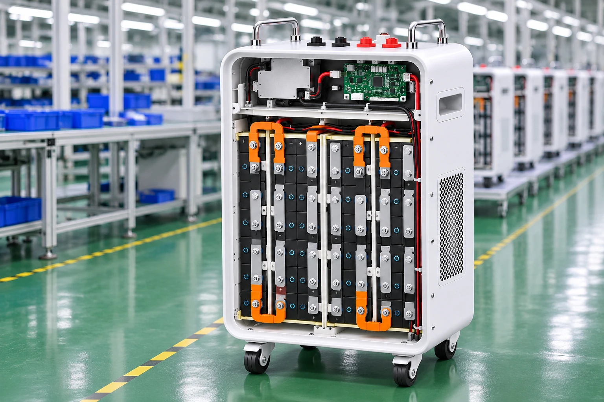
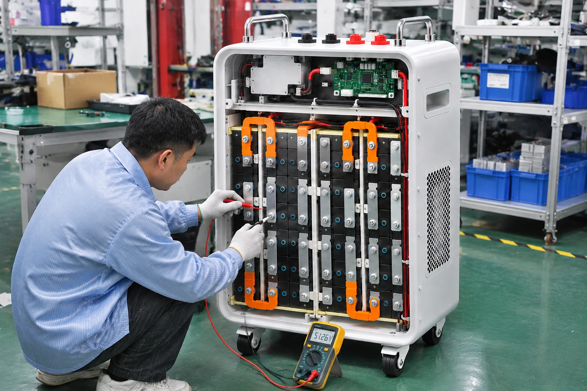
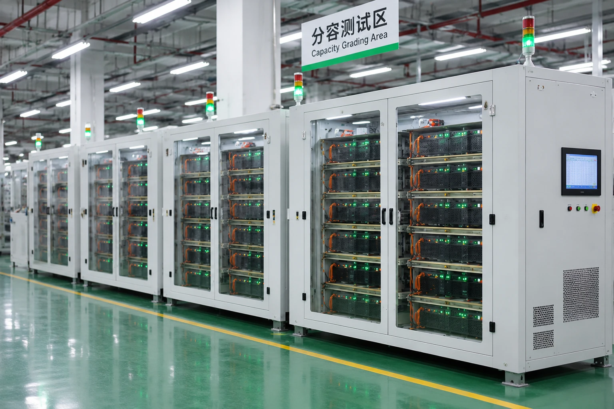
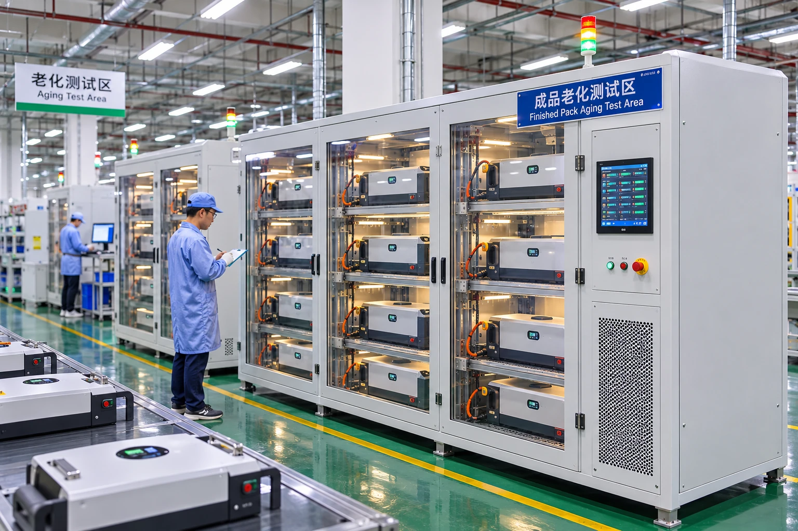
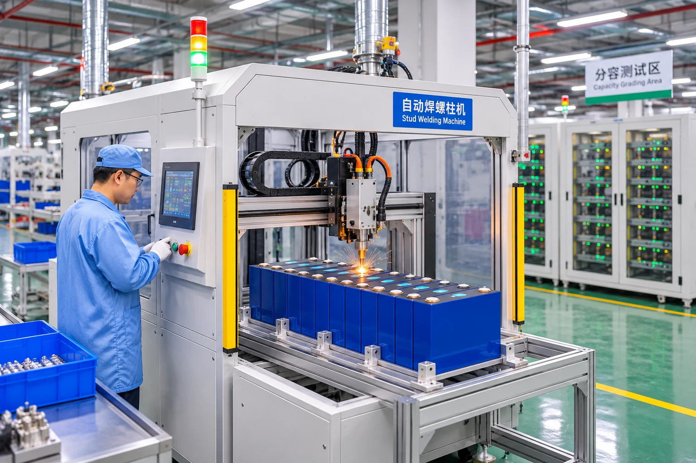

ABOUT ANTHRISE
Clean energy for everyday life and lasting progress.
Connecting life and the future through clean energy, with more dependable and sustainable energy choices for homes, businesses and communities.
Anthrise Technology
We integrate research and development, manufacturing and sales across energy storage, inverters and lighting, connecting product innovation, factory manufacturing and global markets.
PACK processes & warehouse gallery
02 / PROCESS & GALLERYPACK assembly workflow
- Incoming checks · OCV / IR
- Capacity grading & matching
- Insulation & mechanical fixing
- Busbar / interconnection assembly
- BMS & sense wiring
- Pack electrical verification
- Charge / discharge verification
- Final inspection & protective packing
Typical process illustration; actual steps and test limits depend on the confirmed product design. Welded or bolted connections are design-specific. No fixed factory holding period is claimed.
PACK, protective packing and storage

Battery internal assembly

Battery electrical checks

Capacity grading equipment

Finished-pack aging test equipment

Stud welding equipment

Module connections · process illustration

Protective crate packing

Cell and carton storage

Stretch-wrapped cell trays

Cell preparation area

Foam-layer packing

Batch staging on pallets

Protective crate packing
AI-generated process illustrations, not photographs of an actual Anthrise facility. Generic internal views do not establish the design of a specific SKU; system compatibility is subject to confirmation.
Discuss your project →